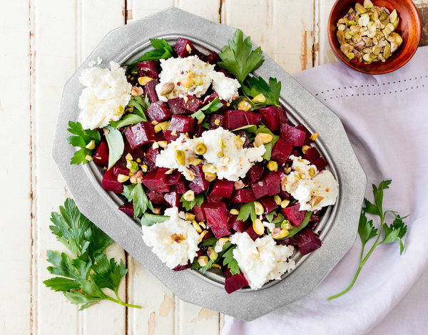

5.Goat cheese and Beetroot salad

Ingredients
Lettuce/Any leafy salad base you like
Beetroot (cut into slices)
Goats Cheese (cut into slices)
Walnuts (Crush up abit)
Balsamic Dressing (you can also make your own if you know how lol)
Method
- Put lettuce/leafy salad on a plate
- Add beetroot and goats cheese on the top
- Sprinkle crushed walnuts on top
- Drizzle balsamic dressing over